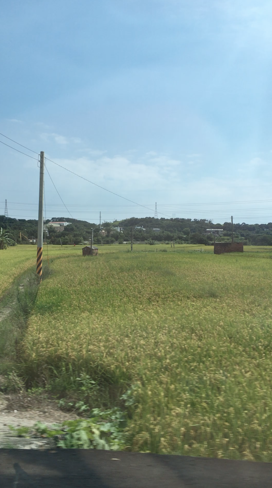

Greetings, this section will show you a bit of my hobbies! Life can be very stressful at times but being able to do these activities really makes me feel relaxed and happy. I am starting high school and on the first day there was an excessive amount of homework assigned as well as a speech due on the 3rd day of school.All of this was a major transition from my easy middle school life.
Although I've only been learning the harp a few months ago, I already feel very close and drawn into it. Playing the instrument truely makes me feel relaxed and happy.The beautiful music and sounds it's able to produce also calms me down.
I have two little sisters named Sydney and Makenzie. Sydney is currently 11 years old and the youngest is 8 years old.Although we did not get along so well when we were younger, I am definitely in better terms with them
I’m a huge nature lover and I really enjoy taking photos of nature,animals,plants, etc. The vast fields and mountains makes me feel very relaxed and soothed. As an introvert, nature allows me to disconnect from society and allows me to be the truest version of myself. Usually when I’m in an area full of people, I feel cramped and it gives me anxiety
Continuing, animals are also something I absolutely love. I have always been an animal lover my whole life and the reasons are very similar to nature.I always feel like I can be myself around them and I feel very relaxed around them.

Next, I’d like to let you know that I’m a big foodie(especially for junk food). When I travel I like to document the food with photography.